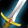
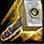
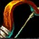
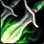
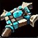
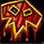
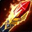
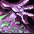
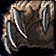

Trouve la classe qui te ressemble
Chaque joueur a sa façon de jouer. Découvre les spécialisations qui correspondent à tes envies, à ton expérience et à ce qui compte vraiment pour toi.
- Deux parcours au choix
- Résultats personnalisés
- Basé sur les spécialisations de niveau 60
Question 3 / 6
Comment aimes-tu combattre ?
Une préférence peut rester souple. Coche une exigence uniquement si elle est non négociable.
Démarrer avec un profil
Choisis un exemple, puis adapte chaque critère à ta façon.
Mes critères personnels
Enregistre tes poids et ta maîtrise sur cet appareil, puis retrouve-les après avoir essayé les profils.
Ton niveau de maîtrise
Influence les performances réalisables, pas le goût pour la difficulté.
Importance de chaque critère
0 = sans importance · 3 = priorité essentielle. Les critères ignorés ne procurent aucun avantage.
Classement personnalisé
Les neuf classes selon tes critères
1 critère actif · maîtrise Confirmé
-
{{r.rank}}
{{r.name}}{{r.spec}} · {{r.range}}
Résultat proche {{r.score}}/100
Chaque classe est classée sur sa configuration de spécialisation la plus cohérente avec tes critères. Les rôles ne comptent qu'une fois ; polyvalence et technicité n'interviennent que si tu les actives. Les faibles écarts ne prouvent pas de supériorité.
| Classe | Rôles | PvP | Dégâts | Qualités | Jeu | |||||||||
|---|---|---|---|---|---|---|---|---|---|---|---|---|---|---|
| Polyvalence | Tank | Soin | DPS PvE | Champ de bataille | Sauvage et duel | Burst | Dégâts de zone | Contrôle | Survie | Mobilité | Utilité | Solo et farm | Technicité | |
 Guerrier | 3 | 5 | 1 | 5 | 4 | 2 | 4 | 5 | 3 | 3 | 4 | 3 | 3 | 4 |
 Paladin | 4 | 4 | 4 | 4 | 5 | 4 | 4 | 3 | 2 | 5 | 2 | 5 | 5 | 2 |
 Chasseur | 2 | 1 | 1 | 5 | 5 | 4 | 4 | 3 | 3 | 3 | 3 | 3 | 5 | 2 |
 Voleur | 1 | 1 | 1 | 3 | 3 | 5 | 5 | 2 | 5 | 2 | 4 | 2 | 3 | 5 |
 Prêtre | 3 | 1 | 5 | 3 | 5 | 4 | 3 | 2 | 4 | 3 | 2 | 4 | 3 | 3 |
 Chaman | 4 | 2 | 4 | 3 | 4 | 4 | 5 | 4 | 2 | 3 | 5 | 5 | 3 | 3 |
 Mage | 1 | 1 | 1 | 4 | 4 | 3 | 5 | 5 | 5 | 2 | 3 | 3 | 3 | 4 |
 Démoniste | 1 | 1 | 1 | 4 | 5 | 5 | 5 | 4 | 5 | 4 | 2 | 3 | 4 | 4 |
 Druide | 5 | 4 | 5 | 3 | 4 | 4 | 4 | 3 | 2 | 4 | 5 | 5 | 3 | 5 |